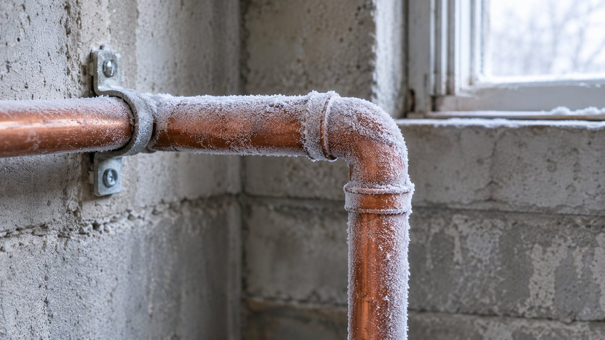
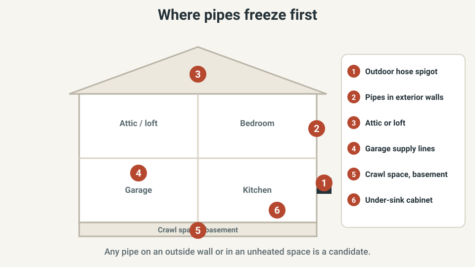
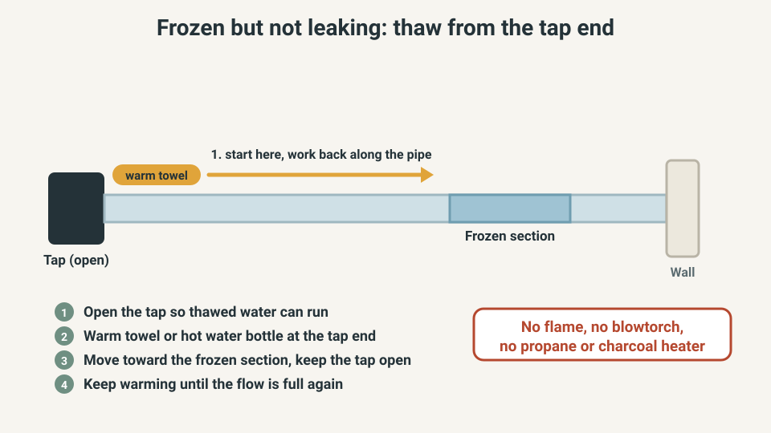
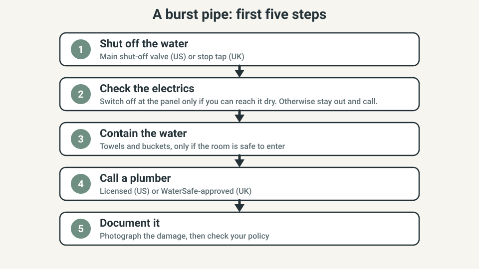

WEEKEND PROJECTS · WINTER PLUMBING
How to Protect Pipes From Freezing and Respond to a Burst Pipe

Water expands as it freezes, and a pipe that is already full has nowhere to put the extra, which is how pipes crack. Most of this guide is about the evening before a cold snap, because prevention takes about an hour and a burst pipe can take days to put right. The rest covers a frozen pipe and a split one. US and UK advice differs in places, so I say which is which.
The quick answer
- Keep the heating steady day and night. If you leave, the Red Cross says no lower than 55°F, and WaterSafe in the UK says at least 14°C. Those are two organizations' advice, not one rule.
- Insulate pipes in unheated spaces, open the cabinet doors under sinks on exterior walls, and disconnect and drain outdoor hoses.
- Know your shut-off now: the main valve in the US, the stop tap in the UK. That single skill limits the damage from a burst.
- Thaw gently from the tap end, with the tap open. Never use a flame or a blowtorch.
- If a pipe bursts, shut off the water first, then deal with electricity, then call a plumber.
I am not a plumber. This guide sums up what the Red Cross, WaterSafe, the Met Office and similar bodies advise, and it is no substitute for a local professional.
Quick plan
| Item | Detail |
|---|---|
| Time | About an hour for the prevention checklist |
| Cost | Low: pipe sleeves or foam insulation are the main spend |
| Best for | Anyone with pipes on exterior walls, in a garage, attic, loft or crawl space |
| Goal | Stop a freeze, or limit the damage if one gets through |
Which pipes are most at risk?
The Red Cross names outdoor hose bibs and the supply lines for pools and sprinklers as the pipes that freeze most often. Indoors, the risk sits in places that stay cold: unheated basements and crawl spaces, attics, garages, kitchen cabinets and pipes in exterior walls, or where the water service comes in through the foundation. In the UK, Northern Ireland's government advice says most frozen pipes are in the roof space and under sink units.

So a pipe can freeze in a house that feels warm. If you have a cold crawl space, our damp crawl space guide covers how to deal with the space itself.
What to do tonight before a cold snap
- Keep the temperature steady. The Red Cross advises the same setting day and night during very cold weather, and notes that a higher heating bill may cost less than a burst pipe. A smart thermostat with a minimum temperature makes that easier to hold.
- Open the doors under sinks on exterior walls so warm air reaches the pipes. Move cleaning products out of reach of children and pets first.
- Disconnect hoses and drain outdoor taps. Both the Red Cross and WaterSafe say to isolate and drain the outside tap where your plumbing allows it.
- Close the garage door if there are supply lines in the garage, and add insulation to exposed pipes. The Red Cross says to insulate both hot and cold pipes.
- Find your shut-off and test it. The Met Office suggests checking that the stop tap works every six months. In the US that means the main shut-off valve.
- Cut the draughts near pipes. Our drafty door guide helps with doors; small gaps near an exterior wall pipe matter too.
- Consider a leak alert. This is my suggestion, not the Red Cross's: a sensor under the sink on an exterior wall tells you early. See where to place water leak sensors.
Going away in cold weather
Do not turn the heat off. The Red Cross says to leave it on and set it no lower than 55°F. WaterSafe says to keep heating on at least 14°C overnight and when away, and its guidance for a home that will be empty for a long time is to turn off the water and drain the system, with a registered plumber's help. Ask a neighbour to look in now and then. I keep the two figures separate because they come from different organizations and neither is a guarantee.
How to spot a frozen pipe
The classic sign is a tap that gives only a trickle or nothing at all. The Red Cross says to look first at pipes against exterior walls and where the water service enters through the foundation. Check other taps too, since one frozen pipe often means more. If it is a visible pipe, frost on the outside is another clue.
What to do if a pipe is frozen but not leaking
Act before it thaws on its own, because a pipe can crack as the ice melts. In the UK, the Met Office says to switch off the stop tap immediately, then turn on nearby cold taps (with the stop tap still off) to relieve pressure. In the US, the Red Cross says to keep the affected faucet open so melting water has somewhere to go.

- Wrap a towel soaked in hot water around the pipe, or use a hot water bottle. WaterSafe and Northern Ireland's guidance both say to start at the end nearest the tap and work back.
- Keep applying gentle heat until full water pressure returns.
- Do not use a blowtorch, naked flame, gas heater or charcoal stove. The Red Cross and Northern Ireland's guidance are firm on this.
- Be careful with electric heaters. The Red Cross mentions a space heater in front of the pipe, while one city utility says never to use an electric device on a frozen pipe. I stay with towels and bottles, and keep anything electrical away from water.
- If you cannot find the frozen section, cannot reach it, or cannot get it to thaw, call a plumber.
What to do the moment a pipe bursts
Order matters. Water first, electricity second.

Shut off the water at the main shut-off valve (US) or the stop tap (UK). The Met Office adds that in the UK you should switch off the boiler too.
Treat electricity with respect. Electrical Safety First's advice is to switch off at the fuse box only if it is safe to do so, and if the fuse box looks wet or damaged, do not touch it and ask a professional. Whatever the source, never touch appliances, cables or sockets while standing in water. If you cannot reach the panel without stepping in water, stay out and call an electrician or your power company.
Contain it. Towels and buckets help only if the room is safe to enter. Call a plumber: licensed in the US, WaterSafe-approved in the UK. Photograph the damage and check your policy, but do not rely on me for what it covers.
After the thaw
A frozen pipe may have split without showing it. A city utility I read warns that after thawing you may discover a leak from a broken pipe. Turn the water back on slowly, look at every exposed section, and check ceilings and walls nearby. If it is dry, wrap the pipe in dry insulation so it does not freeze again.
If you rent, tell your landlord or property manager straight away, in writing, and photograph what you see. Responsibilities for plumbing repairs vary, and I have not checked the rules for any state or country.
Frequently asked questions
Can pipes freeze inside a heated house?
Yes. The Red Cross lists pipes on exterior walls, in garages, attics, basements, crawl spaces and kitchen cabinets as the ones at risk, so a warm living room does not protect a pipe that runs through a cold space.
What temperature will make my pipes freeze?
I could not find an official figure that fits every home. It depends on insulation, wind and where the pipe runs. What the sources do give is a floor for heating when you are away: no lower than 55°F from the Red Cross in the US, and at least 14°C overnight and when away from WaterSafe in the UK.
Should I leave a tap dripping overnight?
In very cold US weather the Red Cross advises letting a trickle run from a faucet served by exposed pipes. UK sources I read lean on insulation, steady heating and a working stop tap instead, and Northern Ireland's advice for a pipe that is already frozen is not to leave taps running, because the water may not drain away.
Can I use a hair dryer or space heater to thaw a pipe?
Opinions differ. The Red Cross mentions a space heater placed in front of the pipe, while one city utility I read says never to use an electric device on a frozen pipe because of the shock and fire risk. I would start with warm towels or a hot water bottle. If you do use anything electric, keep it away from water and from anything that burns.
Can I thaw a pipe with a blowtorch?
No. The Red Cross and Northern Ireland's government guidance both say not to use a blowtorch or naked flame, and the Red Cross adds gas heaters and charcoal stoves to that list. Water company advice I read says the same.
How do I know whether a frozen pipe has burst?
Often you do not know until it thaws. Look for wet patches, stained ceilings, dripping or the sound of running water once the pipe warms, and check every other tap, because one frozen pipe can mean others are frozen too.
Keep going
- Where to place water leak sensors around your home
- How to fix a damp crawl space
- How to stop a drafty door without replacing it
- Install a smart thermostat without a C-wire
Sources and further reading
- American Red Cross, frozen pipes: redcross.org frozen pipes guidance
- WaterSafe, winter advice (UK): watersafe.org.uk winter advice
- Met Office, what to do if you have a frozen or burst pipe: weather.metoffice.gov.uk frozen or burst pipes
- NI Direct, frozen pipes: nidirect.gov.uk frozen pipes and steps to reduce the risk of burst pipes
- City of Bellevue Utilities, preventing and thawing frozen pipes: bellevuewa.gov prevent frozen pipes
- Electrical Safety First, electrical advice for flooded homes: electricalsafetyfirst.org.uk flood advice
Last reviewed: November 21, 2026. The 55°F and 14°C figures are each one organization's advice; I found no single temperature that applies to every home. Check local guidance.